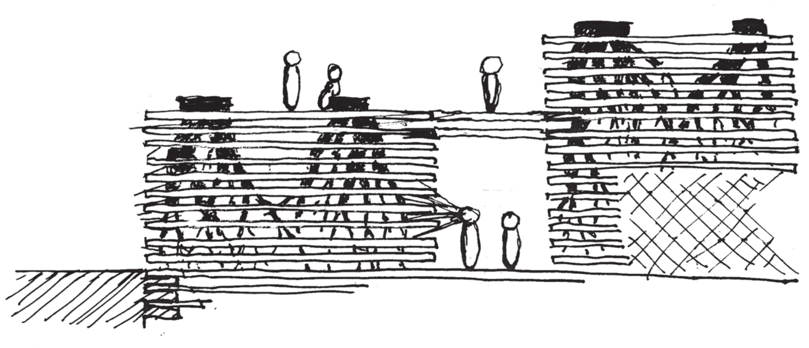

6-mile Island; Weathering Infrastructure
Six-mile island, an island on the Allegheny River, is extremely prone to flooding. It’s
ecosystem and topography elegantly reflect and rely on it. The museum of weather project
seeks to amplify visitors’ understanding of the Allegheny’s variable water level. Through the
shaping of space of board-form concrete, the terracing of program, and the exposure of
subsurface plants, the museum formally represents its objective. Visitors are invited drop below
the island’s ground level on entry, reflect on water’s role in shaping the process, and observe
the current’s effect on debris floating through the water. As the structure ages, dirt and grime
will collect on the cavernous walls and the museum will take a position on its aging material
and structure.
More text
This project was designed in Fall 2020.
